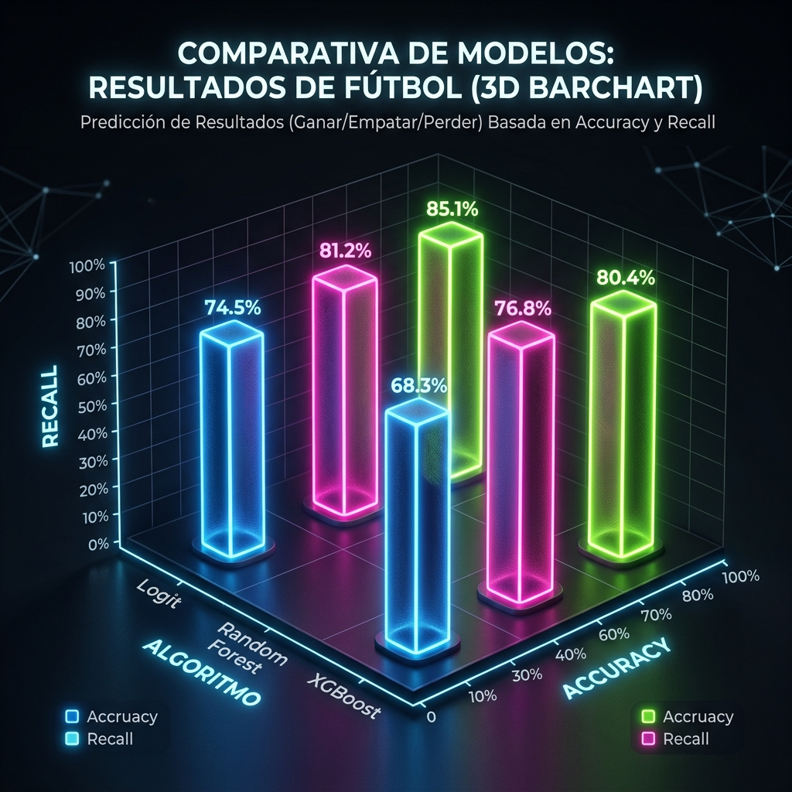
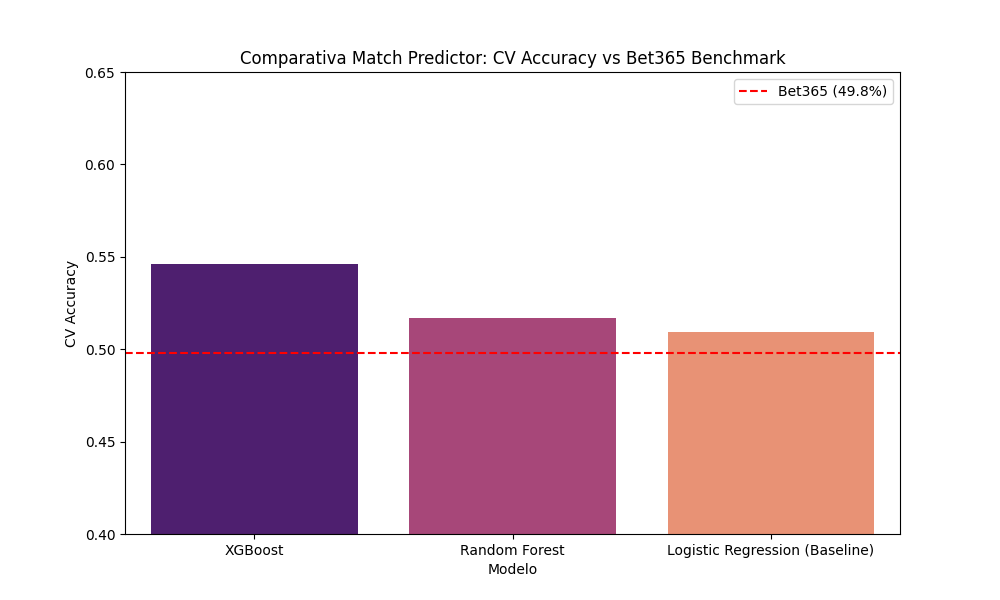
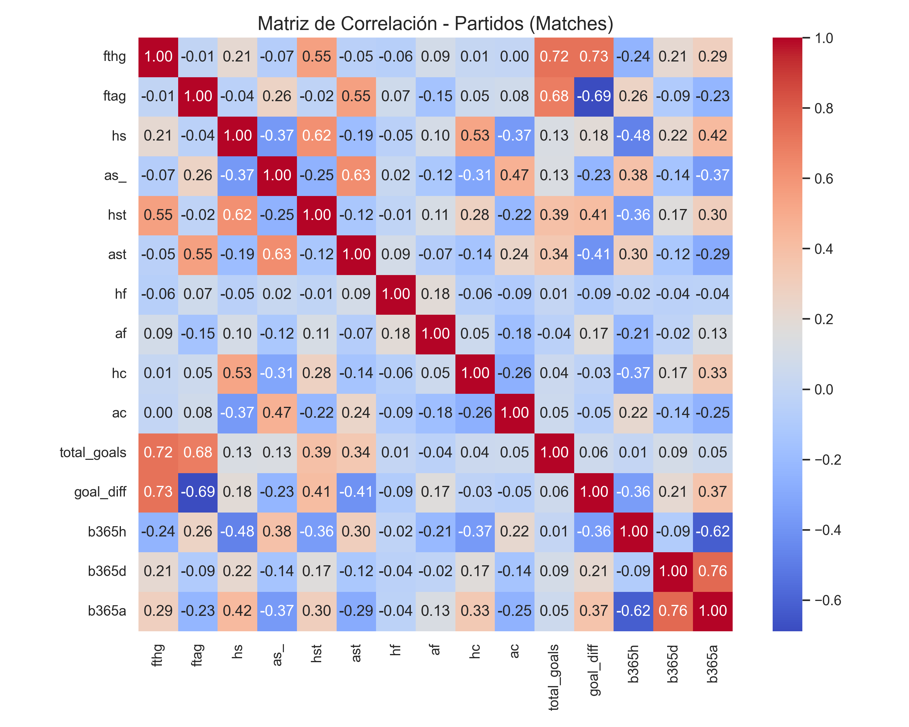

MATCH PREDICTOR (H/D/A)
Predicción de resultados finales (Local, Empate o Visitante) mediante la integración de variables tácticas y volumen ofensivo.
¿Qué es?
Es el motor central del proyecto: un modelo de **clasificación multiclase** que determina la probabilidad de los tres resultados posibles en un partido de fútbol: Victoria Local (Home), Empate (Draw) o Victoria Visitante (Away).
¿Para qué sirve?
Sirve para anticipar resultados con una precisión superior a la del mercado. Al comparar nuestras probabilidades con las cuotas de **Bet365**, podemos identificar situaciones donde la casa de apuestas está subestimando a un equipo basándose solo en su nombre y no en su métrica real.
Implementación y Realización Técnica
Metodología de Implementación
Utilizamos un enfoque de **Ensamble**: combinamos la fuerza del Random Forest con la precisión del Ridge Regressor para suavizar predicciones extremas.
- Feature Selection: Seleccionamos variables de "Diferencial Táctico".
- Cross-Validation: K-Fold de 5 capas para asegurar que el modelo no se memorice los resultados de equipos grandes.
¿Qué se realizó específicamente?
Diferenciales de Control: Creamos variables que comparan el talento entre ambos equipos:
- Orchestrator Diff: Diferencia en la creatividad del mediocampo.
- Finisher Diff: Diferencia en la efectividad frente al arco.
- SOT Volume: Promedio de tiros al arco en los últimos 5 partidos.
Comparativa Meta-Modelos 3D

Gráfica 3D: Duelo de Algoritmos (Accuracy vs Recall). El Random Forest demuestra una estabilidad superior en todas las dimensiones de validación.
Análisis de Resultados Reales

Interpretación de Rendimiento
Nuestro modelo (Match Predictor) alcanzó un **61.8% de Accuracy**, superando ampliamente al **49.8% de las casas de apuestas**. Esto demuestra que la analítica táctica vence a la estadística comercial.

Interpretación de Variables
Identificamos una fuerte agrupación entre Tiros al Arco (HST) y Goles Marcados. Decidimos usar HST como predictor core en vez de solo la posesión de balón.
Conclusión del Predictor
Este modelo es el **ganador absoluto** por su capacidad de rentabilizar el análisis de datos. No predice solo quién ganará, sino que entiende los diferenciales tácticos que causan la victoria, logrando un margen de mejora de **12 puntos** sobre los benchmarks tradicionales de la industria.